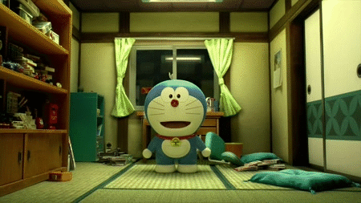
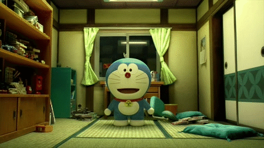
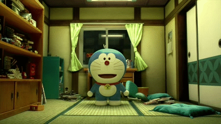
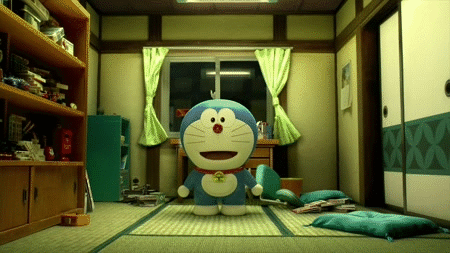

 

Keyboard
Keyboard adalah sebuah perangkat masukan yang digunakan untuk memasukan data berupa huruf, angka maupun symbol tertentu serta melakukan perintah-perintah untuk menyimpan file dan membuka file. Keyboard disebut juga sebagai papan ketik pada komputer.
Mouse

Mouse adalah sebuah perangkat masukan yang berguna sebagai penunjuk posisi kursor/pointer pada layar monitor.
Joystick
Joystick adalah alat masukan yang digunakan untuk memasukan perintah untuk menggerakan permainan pada komputer.
Headset

Headset adalah Perangkat keras komputer yang berfungsi sebagai media pengeluaran untuk gelombang suara yang telah disistem oleh komputer.
Microphone
Microphone adalah perangkat keras keluaran yang dapat menangkap gelombang suara lalu merubahnya menjadi getaran listrik. Microphone ini memiliki fungsi untuk mengeluarkan suara atau menjadi media rekaman suara yang divisualkan melalui gelombang getaran suara.
Webcam
WebCam adalah sebutan bagi kamera real-time yang gambarnya bisa di akses atau dilihat melalui WWW (World Wide Web), program instant messaging atau aplikasi video call yang memasukan hasil data rekaman dan dibentuk dalam format digital.
Trackball
Trackball adalah perangkat keras yang digunakan sebagai alat penunjuk berupa sebuah bola yang memiliki sensor untuk mendeteksi gerakan.
CPU (Central Processing Unit)
CPU adalah pusat pengendali dan pemerosesan pada sebuah komputer yang mengatur semua instruksi program dan semua aktivitas yang dilakukan dalam komputer, sehingga CPU biasa disebut sebagai otak dari komputer.
Kartu Grafis (VGA Card)
Kartu Grafis (VGA Card) adalah kartu ekspansi (expansion card) untuk memproses gambar dan menampilkannya melalui monitor.
Motherboard (Mainboard)
Motherboard adalah papan sirkuit yang berfungsi sebagai tempat komponen-komponen komputer seperti processor, harddisk, RAM dan lain sebagainya. Dalam istilah bahasa Indonesia, motherboard diterjemahkan sebagai ‘papan induk’, atau sering juga disingkat menjadi mobo.
Processor
Processor adalah perangkat keras yang berguna untuk melakukan pembacaan, pengertian dan melaksanakan perintah dari pelaksanaan program.
LAN Card (Local Area Network)
LAN (Local Area Network) adalah jembatan penghubung antara komputer server dan komputer client dalam jaringan LAN.
RAM (Random Access Memory)

Ram (Random Access Memory) adalah Tempat dimana kita menemukan instruksi-instruksi yang hendak dikerjakan dan sebagai media penyimpanan sementara.
Monitor
Monitor adalah sebuah perangkat keluaran yang digunakan untuk mengeluarkan hasil pemerosesan yang dilakukan oleh komputer berupa informasi yang dibutuhkan oleh orang yang memakai komputer.
Speaker
Speaker adalah perangkat keras keluaran(Output) yang berfungsi untuk mengeluarkan hasil pemerosesan berupa suara dari komputer.
Printer

Printer adalah perangkat keluaran yang digunakan untuk mencetak data seperti gambar/foto, tulisan pada media kertas.
Digitizer Tablet

LAN (Local Area Network) adalah jembatan penghubung antara komputer server dan komputer client dalam jaringan LAN.
Drawing Tablet
Trackball adalah perangkat keras yang digunakan sebagai alat penunjuk berupa sebuah bola yang memiliki sensor untuk mendeteksi gerakan.
Flashdisk
Trackball adalah perangkat keras yang digunakan sebagai alat penunjuk berupa sebuah bola yang memiliki sensor untuk mendeteksi gerakan.
Scanner
Trackball adalah perangkat keras yang digunakan sebagai alat penunjuk berupa sebuah bola yang memiliki sensor untuk mendeteksi gerakan.
Projector
Trackball adalah perangkat keras yang digunakan sebagai alat penunjuk berupa sebuah bola yang memiliki sensor untuk mendeteksi gerakan.
Modem
Modem adalah perangkat keras yang digunakan untuk menghubungkan komputer ke jaringan internet.
CD/DVD ROM
CD/DVD ROM adalah perangkat yang berfungsi untuk membaca data atau program dari media penyimpanan data CD atau DVD.
Hardisk Internal
Hardisk Internal adalahhardisk tempat penyimpanan komputer yang terdapat di dalam PC atau Laptop sebagaintempat penyimpanan yang harus ada dalam sebuah PC karena sebuah PC tidak akan berjalan tanpa adanya tempat penyimpanan, seperti OS yang di simpan di dalam sebuah hardisk Internal.
Hardisk External
Hardisk Eksternal adalah hardisk yang digunakan sebagai hrdisk tambahan atau media penyimpanan tambahan karena apabila hardisk internal penuh maka akan berakibat kompputer menjadi lakbat karena beratnya beban yang ada pada hardisk internal untuk itu, hardisk Eksternal digunakan sebagai media penyimpannan tambahan untuk menghindari masalah pada PC.
Power Supply
Power Supply adalah perangkat keras komputer yang digunakan untuk memberikan tenaga dan energi arus listrik pada komputer.
UPS (Uninterruptible Power Supply)
UPS adalah perangkat keras komputer yang berfungsi untuk memberikan suplai/menghantarkan listrik ketika tegangan listrik utama terhenti atau tidak berfungsi, dengan kata lain UPS bisa dikatakan sebagai cadangan listrik ketika tegangan listrik utamanya padam.